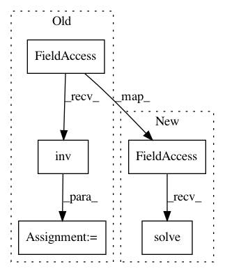

171afc33723ad7f0a061131ad85041cdf8f305e5,nara_wpe/wpe.py,,get_filter_matrix_conjugate_v3,#Any#Any#Any#Any#,120
Before Change
Y, inverse_power, K, delay
)
inv = np.linalg.inv(correlation_matrix)
inv = np.kron(np.eye(D), inv)
correlation_vector = np.reshape(correlation_vector, (D * D * K, 1))
selector = np.transpose(np.reshape(
np.arange(D * D * K), (-1, K, D)
), (1, 0, 2)).flatten()
inv = inv[:, selector]
inv = inv[selector, :]
stacked_filter_conj = inv @ correlation_vector
filter_matrix_conj = np.transpose(
np.reshape(stacked_filter_conj, (K, D, D)), (0, 2, 1))
return filter_matrix_conj
After Change
// This should still be faster and more stable than np.linalg.inv().
// print(np.linalg.cond(correlation_matrix))
stacked_filter_conj = np.reshape(
np.linalg.solve(
correlation_matrix[None, :, :],
np.reshape(correlation_vector, (D, D * K, 1))
),
(D * D * K, 1)
)
stacked_filter_conj = stacked_filter_conj[selector, :]
In pattern: SUPERPATTERN
Frequency: 3
Non-data size: 5
Instances
Project Name: fgnt/nara_wpe
Commit Name: 171afc33723ad7f0a061131ad85041cdf8f305e5
Time: 2017-06-28
Author: ldrude@mail.uni-paderborn.de
File Name: nara_wpe/wpe.py
Class Name:
Method Name: get_filter_matrix_conjugate_v3
Project Name: robertmartin8/PyPortfolioOpt
Commit Name: 2cfa771a3207863a4dab8219e3ab12d42837ab35
Time: 2020-02-25
Author: martin.robertandrew@gmail.com
File Name: pypfopt/black_litterman.py
Class Name: BlackLittermanModel
Method Name: bl_cov
Project Name: pymanopt/pymanopt
Commit Name: a1be7bf2f0926707e25b02570c17ba373878f768
Time: 2016-03-14
Author: jamiehntownsend@gmail.com
File Name: pymanopt/manifolds/psd.py
Class Name: PositiveDefinite
Method Name: exp